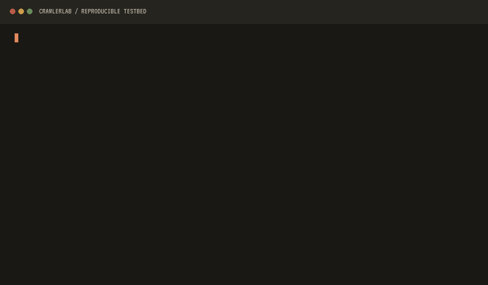

CrawlerLab
An open, independent testbed for measuring crawler and agent defences — with an explainable reference implementation for bounded deception.
#1 The question
Crawler and agent defences make strong claims that are hard to check. What would an honest, reproducible measurement look like?
#2 The approach
A fixed-origin gateway scores independent request and behaviour signals in off, shadow or live mode. Every decision leaves an evidence trail; suspicious clients can be led into a signed, expiring, finite decoy maze.
#3 The rule
Headers are evidence, not identity. A score of 90 from headers and rate alone still cannot authorize diversion.
Score a request yourself.
Heuristic total
0
Action allow
Divert locked — needs challenge-level evidence and signed decoy provenance.
Let through. No signal fired.
Weights and thresholds from CrawlerLab’s published decision model: allow below 20, observe below 45, challenge at 45 or higher; divert additionally requires signed decoy provenance. Scores are heuristic totals, not probabilities or proof of intent.
Honest evaluation
It names its own misses.
Ten synthetic cases form a regression baseline — not evidence of production efficacy. The two misses are printed in the output, not hidden:
anonymous-minimal-client careful-curl-harvester
- Precision
- 1.000
- Recall
- 0.667
- F1
- 0.800
- False positives
- 0
- False negatives
- 2

What’s inside — and the safety property of each layer
- L01
Detector
Scores independent request and behaviour signals.
No diversion from weak header evidence alone.
- L02
Canary
Adds a non-public link to eligible suspicious HTML.
Never in shadow mode or below threshold.
- L03
Ticket signer
Authenticates maze state with HMAC-SHA256.
Forged and expired routes look like ordinary 404s.
- L04
Decoy corpus
Serves deterministic, curated factual notes.
No runtime generation, no misinformation.
- L05
Telemetry
Records scores, actions and signal codes.
No raw IP, body, cookie or full User-Agent.
- L06
Operator
Shows real gateway state and pseudonymous events.
Refuses non-loopback binding.